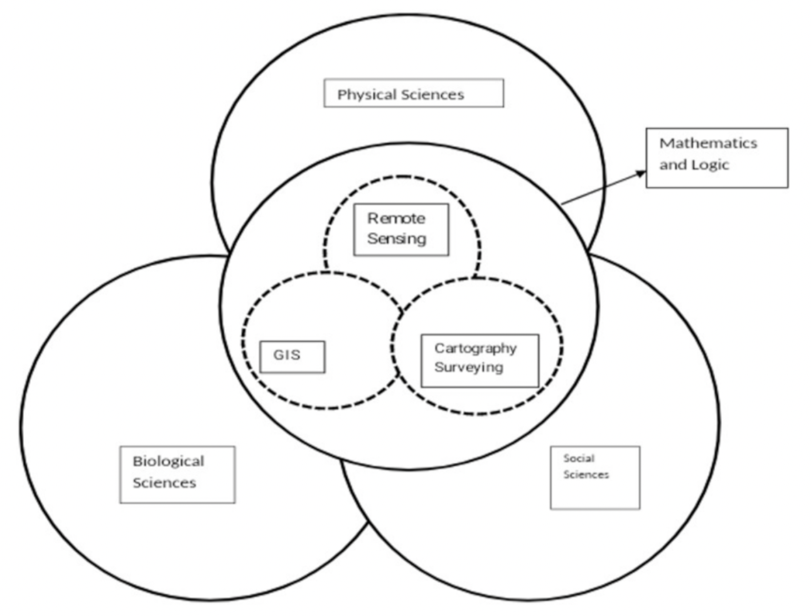

Percepción Remota
La teledetección es el proceso de captura, medición y análisis de imágenes y representaciones digitales de patrones energéticos derivados de dispositivos sensores sin contacto con el fin de recopilar información fidedigna sobre las cosas físicas y el medio ambiente. La tecnología de teledetección ha penetrado en todos los segmentos de los recursos naturales, ya que proporciona información clara en modo de imagen.
Todos los objetos del universo reflejan, irradian o dispersan radiación electromagnética. La teledetección es una técnica o herramienta similar a las matemáticas. Se utilizan sensores para medir la cantidad de radiación irradiada por un objeto o área geográfica a distancia y, con la ayuda de algoritmos basados en estadísticas y matemáticas, se extrae información valiosa.
En la Figure 1 se muestra un modelo de interacción que describe la relación de la teledetección con las ciencias sociales, físicas y biológicas y con las matemáticas y la lógica. El proceso general de teledetección utilizado por los científicos para extraer información a partir de datos obtenidos por teledetección se desarrolla en cuatro pasos, como se muestra en la figura 2. En esta subsección, se han tratado diferentes formas de adquisición de datos de teledetección y procesos de detección de cambios.

Métodos de adquisición de datos de teledetección
La adquisición de datos de teledetección es el trabajo más importante y costoso del proceso de teledetección. Es esencial disponer de imágenes de teledetección en formato digital para aplicar el procesamiento digital de imágenes. Hay dos formas fundamentales de adquirir la imagen digital:
Capturar la imagen con un dispositivo de teledetección en formato analógico y, a continuación, convertirla a formato digital.
Tomar una imagen digital de la imagen teledetectada, como la obtenida por el sistema de sensores Landsat 7 Thematic Mapper.
Se denomina resolución (radiométrica) a la capacidad de un sistema de presentar la información en la menor cantidad discretamente separable en términos de espacio (espacial), banda de longitud de onda EMR (espectral), tiempo (temporal) y/o cantidad de radiación. Algunos de los principales parámetros que determinan la naturaleza de los datos de teledetección recogidos se analizan en las subsecciones siguientes.
Información espectral y resolución
La dimensión (tamaño) y el número de bandas o canales específicos del espectro electromagnético a los que es sensible un sensor de teledetección son resoluciones espectrales. Los datos se recogen en muchas bandas del espectro electromagnético mediante un sensor multiespectral de teledetección. Los datos son recogidos en cientos de bandas espectrales por un dispositivo hiperespectral de teledetección. La energía es registrada en cientos de bandas por un sistema de teledetección ultraespectral. Las bandas suelen elegirse para maximizar el contraste entre el objeto y el fondo. En consecuencia, una selección adecuada de las bandas puede aumentar la probabilidad de recuperar la información necesaria a partir de los datos del sensor remoto. Cuanto mayor sea la estrechez de la banda, mayor será la resolución espectral.
Información espacial y resolución
La menor distancia angular o lineal entre dos objetos que puede resolver un sistema de teledetección se denomina resolución espacial. Utilizando la información espacial de la imagen, se puede estimar la cantidad de autocorrelación espectral. Un píxel es un pequeño punto de la superficie terrestre que un sensor puede observar como distinto de su entorno. Es un elemento detector o una rendija cuando se proyecta sobre el suelo. En otras palabras, el segmento de terreno detectado en un momento dado es la resolución espacial del escáner. A veces se ha denominado elemento de resolución del terreno (GRE). La resolución espacial con la que se obtienen los datos afecta a la capacidad de distinguir diversas características y medir su extensión. Según la regla habitual, la resolución espacial debe ser inferior a la mitad del tamaño del objeto de interés más pequeño.
Información temporal y resolución
La resolución temporal se refiere a la frecuencia con la que un sensor registra una imagen de un área específica. Para muchas aplicaciones, una alta resolución temporal es crítica. La resolución temporal se refiere a la capacidad del satélite para extraer la misma zona desde el mismo ángulo de visión en diferentes momentos. La resolución temporal de un sensor viene determinada por varios elementos, como las capacidades del satélite/sensor, el solapamiento de franjas y la latitud.
Información radiométrica y resolución
La sensibilidad de los detectores a pequeñas variaciones en la energía electromagnética se conoce como resolución radiométrica. Una alta resolución radiométrica mejora la probabilidad de una teledetección más precisa de los fenómenos. La medida de un sensor le permite distinguir la más mínima variación en la reflectancia/remitancia espectral entre diferentes objetivos. El número de niveles de cuantización y la radiancia de saturación determinan la resolución radiométrica. Cuantos más niveles haya, más detallada será la información que se digitalice.
Información de polarización
Las características de polarización de la radiación electromagnética recogida por los sistemas de teledetección pueden utilizarse para investigar los recursos de la Tierra. En general, cuanto más fuerte es la polarización, más lisa es la superficie del objeto.
Información angular
El ángulo de incidencia se ha relacionado tradicionalmente con la energía entrante que ilumina el paisaje y el ángulo de salida del terreno hacia el sistema sensor. La naturaleza bidireccional de la adquisición de datos de teledetección influye en el espectro y la polarización de la luz del sensor recogida por el sistema de teledetección [3,4].
Adquisición de datos de teledetección
Los dos métodos importantes de adquisición de datos de teledetección son la fotografía aérea y la adquisición de datos de imágenes de satélite. Las fotografías aéreas son las instantáneas de la tierra tomadas por cámaras calibradas en un instante concreto de tiempo en formato analógico. Mediante el proceso de digitalización, este formato analógico se convierte en formato digital. La fotografía aérea puede tomarse desde el espacio, desde aviones a gran o poca altura, o desde plataformas cercanas al suelo. Cada toma aérea contiene información vital para el usuario al margen.
Fotografías verticales: El dispositivo fotográfico, es decir, la cámara, se fija lo más recto posible hacia abajo cuando se toma una fotografía vertical. La tolerancia permitida desde la línea de plomada (perpendicular) al eje de la cámara es normalmente de +3 grados. El eje del objetivo es casi perpendicular a la superficie terrestre, cubre un área limitada en una sola toma vertical y se asemeja mucho a un cuadrado o un rectángulo [4].
Oblicuo alto: La cámara se inclina unos 60 grados con respecto a la vertical cuando se realiza una toma oblicua alta. Se emplea sobre todo en la creación de cartas aeronáuticas y tiene una aplicación militar menor. El área de terreno cubierta es trapezoidal en las imágenes oblicuas altas; el horizonte siempre es visible en las fotografías oblicuas altas.
Oblicuo bajo: Esta fotografía se toma con la cámara en un ángulo de 30 grados respecto a la vertical. Se ha utilizado para investigar una zona antes de un ataque, como sustituto de un mapa o como complemento de un mapa. El área de terreno cubierta es un trapecio en oblicuo bajo y la cobertura es bastante limitada [5].
Trimetrogon: Es un compuesto de tres fotos tomadas simultáneamente, una vertical y dos oblicuas altas, en dirección perpendicular a la trayectoria de vuelo. Las imágenes oblicuas, tomadas en un ángulo de 60 grados respecto a la vertical, solapan la fotografía vertical, dando lugar a composiciones que van de horizonte a horizonte.
Sensores de teledetección
continuar …
Documento conceptual Detección de cambios en datos de imágenes de teledetección comparando métodos algebraicos y de aprendizaje automático